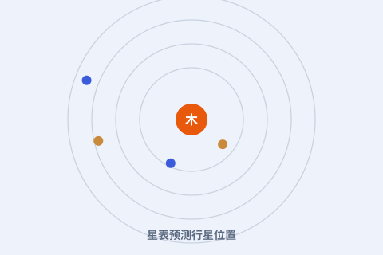

一、接过第谷的遗产
星表以皇帝鲁道夫命名，根基却是第谷毕生的观测。开普勒把老师的数据、自己的椭圆定律和大量计算熔于一炉。

二、用对数省下力气
当时刚发明的对数，让海量的乘除变成加减。开普勒大量使用对数表，才在手工计算的时代完成了这种规模的运算。
三、能预言，才好用
星表不仅能回放历史记录，还能预报行星、彗星的位置。它成了航海与天文观测的实用工具，被沿用了上百年。
四、星表的遗产
鲁道夫星表是近代天文学的里程碑：它第一次把“观测—定律—预言”连成闭环。后来的牛顿，正是在这样的精度上验证自己的引力理论。